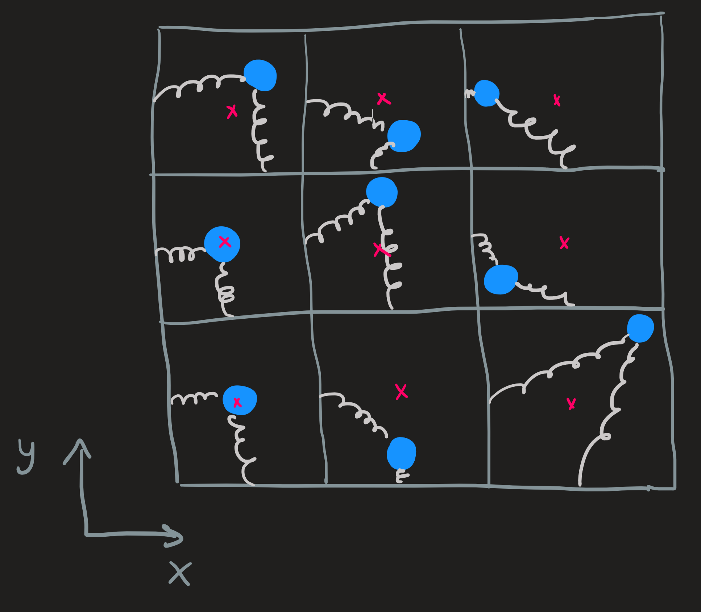

Einstein model for a solid
Introduction
The system
Our system is composed by a lattice of atoms and we want to focus our description on the oscillations performed by the nuclei, we ignore any contribution from the electrons.

We further assume each nucleus is independent and each exhibit small oscillation around it equilibrium position.

Classical Model
What is the total energy of small oscillations?
The system is a box attached to a spring, the coordinate \(x\) measures the deviation from the equilibrium position and the coordinate \(p\) is the box’s linear momentum. These coordinates are real functions of time.
The total energy of the system: We want to obtain a formula for the total energy in terms of the system coordinates using classical theory since its most familiar to us.
Recall it is the sum of the kinetic energy of the box, which has the usual form \(p^2/2m\), and the potential energy \(v(x)\) that characterizes the spring force. What function \(v(x)\) can possibly describe well such a system?
Note the assumptions! We want to describe small oscillations, i.e., the deviation \(x\) from equilibrium must be really small, much smaller than 1, mathematically \(|x|\ll 1\) or if you prefer, the limit as \(x \longrightarrow 0\).
With this information in our hands we can do something wonderful; we can break \(v(x)\) in two parts: the relevant part and negligible one. Using the power of Taylor series we find:
\[ v(x) = \overbrace{v(0) + v'(0)x + \frac{1}{2}v''(0)x^2}^{Relevant}+\mathcal{O}(x^3). \tag{1}\]
To simplify \(v(x)\): the constant term \(v(0)\) is set to zero to simplify notation and since \(v(x)\) has a minimum at \(x=0\), \(v'(0)=0\) aswell. Additionally, we identify \(v''(0)\) as Hook constant \(k\) which, by the way, can be rewritten as \(m\omega^2\), the \(\omega\) is the characteristic frequency \(\omega\) of an oscillator for which this approximation is valid.
This makes this formula pleasantly simple
\[ v(x) \sim \frac{1}{2}kx^2 =\frac{1}{2}m \omega^2x^2 \tag{2}\]
Pictorially, the rhs describes the parabola (pink) that better fits the original potential energy (blue).
What have we achieved so far? We got the formula Equation 2 . Look at it as the functional form of any function that describes the potential energy as a function of \(x\) of an oscillator, oscillating :) with small amplitude. Small compared to what, small enough that the third order \(\mathcal{O}(x^3)\) terms of the Taylor Equation 1 are negligible compared with \(\mathcal{O}(x^2)\) term.
The total energy of the system is now one step away, its called the Hamiltonian \(h\) of the system as is (as usual) the sum of the kinetic energy plus potential energy which we express has:
\[ h=\frac{p^2}{2m}+\frac{1}{2}m \omega^2x^2. \tag{3}\]
With the classical mindset we could, if we wish, derive the laws of motion for this spring-box system using this Hamiltonian, these laws are:
\[ \begin{cases} \dot{x} = \frac{\partial h}{\partial p}\\ \dot{p} = - \frac{\partial h}{\partial x} \end{cases} \]
This system of differential equations yields the functions \(x(t)\) and \(p(t)\). But to compute them is not our goal.
Is it me, or did I pull the frequency \(\omega\) out of my a#$. Right? Here is some insight, imagine a stiff spring, then we expect a high frequency of oscillation, this is what the formula
\[ \omega =\sqrt{\frac{k}{m}}, \]
tells us, the higher the \(k\) for a fixed mass \(m\), the higher the frequency \(\omega\). The formula is derived from classical theory, if you don’t remember how, don’t worry since we will not need it anyway, just take it as a fact of life that makes intuitive sense.
Quantum model of \(1\) oscillator
What we want: It was simple to derive the classical hamiltonian Equation 3 using classical mechanics, now we convert it into a quantum hamiltonian by translating the coordinates \(x\) and \(p\), real functions of time, into quantum operators of position \(\hat{x}\) and \(\hat{p}\):
\[ \hat{h}=\frac{\hat{p}^2}{2m}+\frac{1}{2}m \omega^2\hat{x}^2. \]
Classical vs Quantum: In classical mechanics the system is described by the position and momentum, \((x,p)\) which live in \(\mathbb{R}^2\). In quantum mechanics the system is described by the state vector \(|\psi\rangle\) which live in the Hilbert space \(\mathbb{H}\).
Goal: introduce a basis into Hilbert space \(\mathbb{H}\) composed by the eigenvectors of the hamiltonian \(\hat{h}\). It is the suitable basis to describe a quantum harmonic oscillator.
Basis: To drive this eigenstates is a rather long process which involves the introduction of creation and anihilation operators and to study their properties, we will skip the detail, the key takeaway is the structure (how the are organized) of these eigenvectors:
\[ \hat{h}|n\rangle = e_n|n\rangle,\qquad e_n = \hbar \omega(n+\frac{1}{2}) \]
The vectors \(|n\rangle\) are index with integers \(n=0,1,2,..\) and the corresponding eigenvectors are \(e_n\). The basis \(\{|n\rangle\}_{n=0,1,..}\) is orthonormal:
\[ \langle n | n'\rangle = \delta_{n,n'} \]
General state: any state of the quantum oscillator in the hilbert space can be written as a linear combination of this basis vectors
\[ |\psi\rangle = \sum_{n=0}^\infty c_n |n\rangle \] However, in what follows we can restrict ourselves to dealing with just the basis \(|n\rangle\).